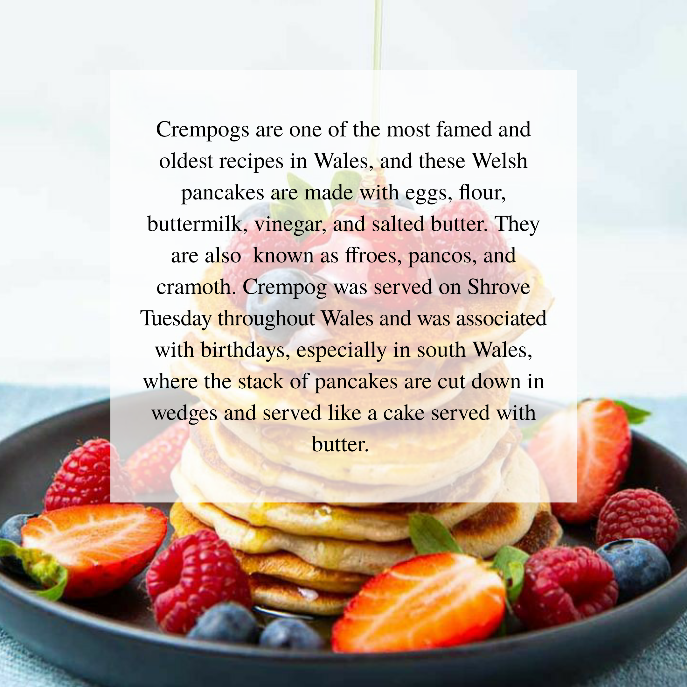
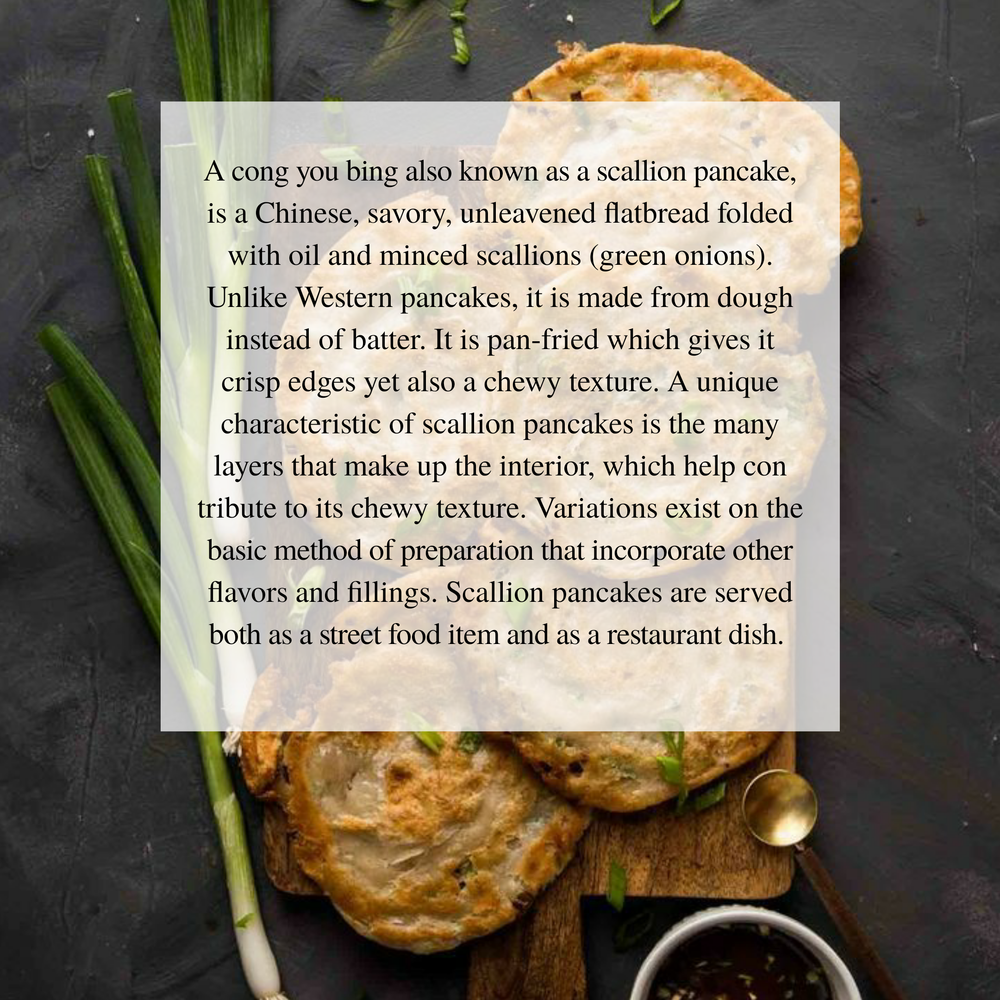

Semonlina Pancake Canelloni
Akash Nath, Raagini Poddar
July 1, 2020 | Creativity
When you think of the word 'pancake', the first picture that comes to mind is that of a fluffy and delicious breakfast dish topped with knobs of butter and a heaping helping of maple syrup. However, almost every nook and corner of the world has a type of pancake native to itself. Archaeological evidence suggests that pancakes were probably the earliest and most widespread cereal food eaten in prehistoric societies.Pancakes come in many different shapes, sizes and flavors. They can be sweet, savory, thick, thin, small or large, but are all delicious! Whatever the age of the primal pancake, it's clearly an ancient form of food, as evidenced by its ubiquity in cultural traditions across the globe. Here I will be sharing facts and recipes for just a handful out of the many hundreds.



Ingredients:
For the Pancakes:
half a cup yoghurt (dahi)
2 cups water
1 cup semolina (sooji)
2 tbsp all-purpose flour
vegetable oil for cooking
For the Sauce:
2 tbsp olive oil
1 onion, finely chopped
4-5 cloves garlic, peeled and crushed
2 tsp dried mixed herbs
1 tsp chili flakes (add more if you want)
6-7 tomatoes, blanched, peeled and pureed
3 tbsp store bought tomato puree (optional)
Fresh basil leaves (you can add any other fresh herbs that you want)
Sugar and salt to taste
For the Filling:
1 cup chhena (homemade ricotta)
4 cups spinach
half a cup corn,
quarter cup cheese, grated (for topping)
Method:
Mix the yoghurt and the water in a bowl. Now add in the semolina (sooji) and flour. Mix this well and cover the bowl with a lid for 20 minutes.
Meanwhile, place the spinach in a large pan (without water) and cook till it wilts and all the water released has evaporated. Take it out in a bowl to cool.
After the batter has rested, heat a pan (tawa) and sprinkle some oil. Wipe the pan with a moist cloth and spread the batter thinly to form a circle. Sprinkle some oil from the sides and cook. Flip it over and do the same until all of them are cooked. Place them on a plate and set aside.
In the same pan as the spinach, heat he olive oil and add in the onions and cook until they are translucent. Add the garlic after that and cook for 30-40 seconds until raw smell has gone.
Now pour in both types of tomato puree (homemade and store-bought). Add in the dried herbs, chilli flakes, 1 tsp sugar and some salt. Cook the sauce until it has become thick, for about 15-20 minutes. Check for seasoning at this point. You will probably need to add in some more salt and sugar. Mix in the fresh herbs at last.
Add the chhena and corn to the spinach along with some salt and mix.
Assembling:
Place the filling equally in each crepe and roll them up.
In a baking dish, pour in half the tomato sauce. Arrange the rolls you have made on that and pour over the rest of the sauce on it.
Sprinkle with some cheese and bake for 10-15 minutes in a preheated oven. Serve hot!
Pancakes are a very versatile dish. In fact, they are often used as an ingredient to construct an entire dish, such as in the recipe I havegiven. There can be many variations for each recipe when it comes to what flavour you want, as long as the recipe for the batter is constant. For this recipe you can play around with the filling and add in many more sauteed vegetables like mushrooms, zucchini, bell peppers, etc. You can even add in some mozzarella cheese in the filling itself.
Pancakes have evolved immensely as different cultures have taken something from other to form their own. They are a food that can be seen served on roadside stalls as well as the fanciest and uber-chic restaurants. From children eating them at breakfast to adults indulging in gourmet cheese and truffle pancakes for brunch, this beauty never disappoints!
So what are you waiting for? Go into your kitchen and try this recipe now! And when you do, DM me a picture (and any questions you might have) on @eatupbyraagini on Instagram so that I can feature it on my page. Happy Pancaking!